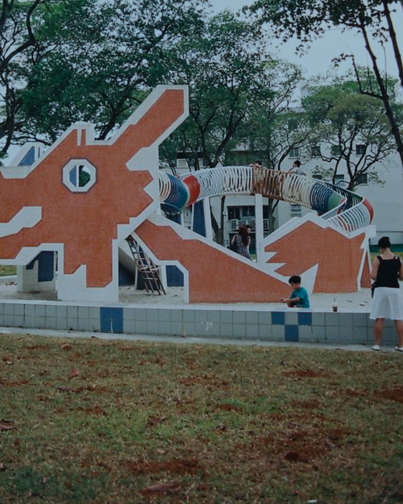
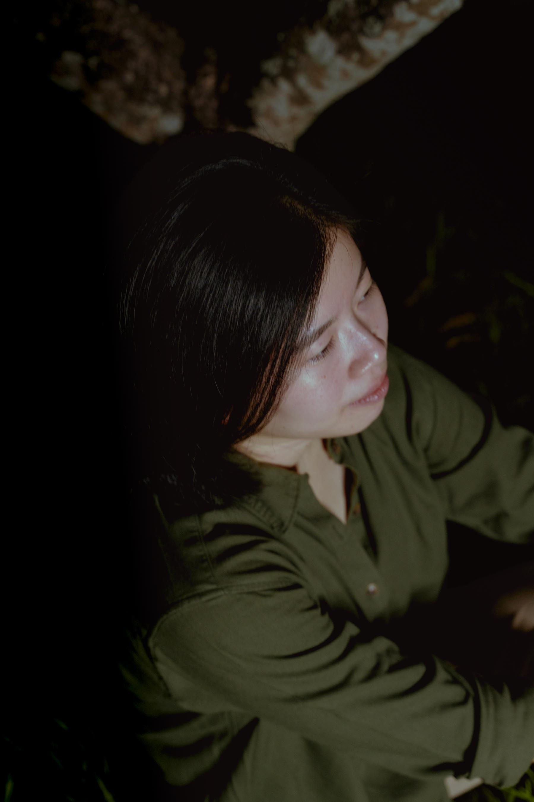
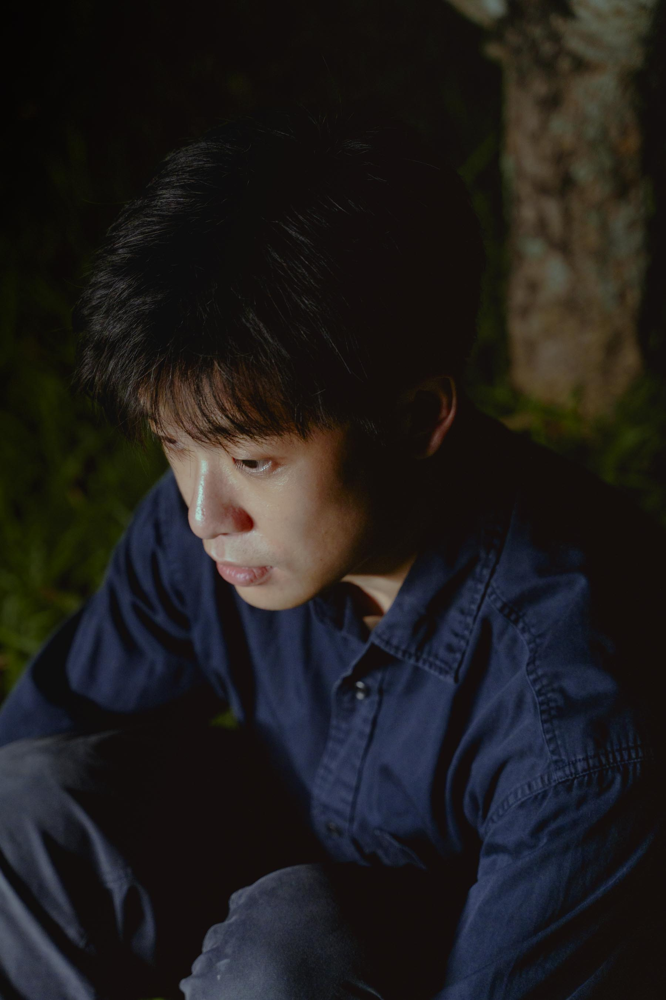
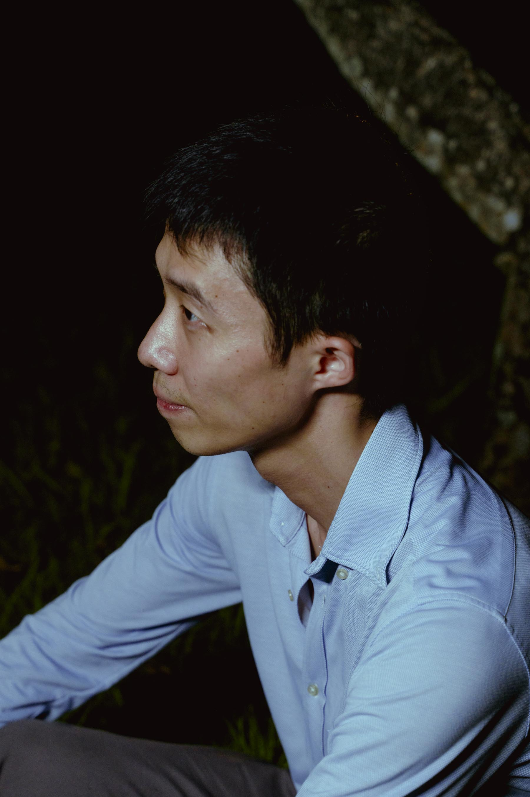
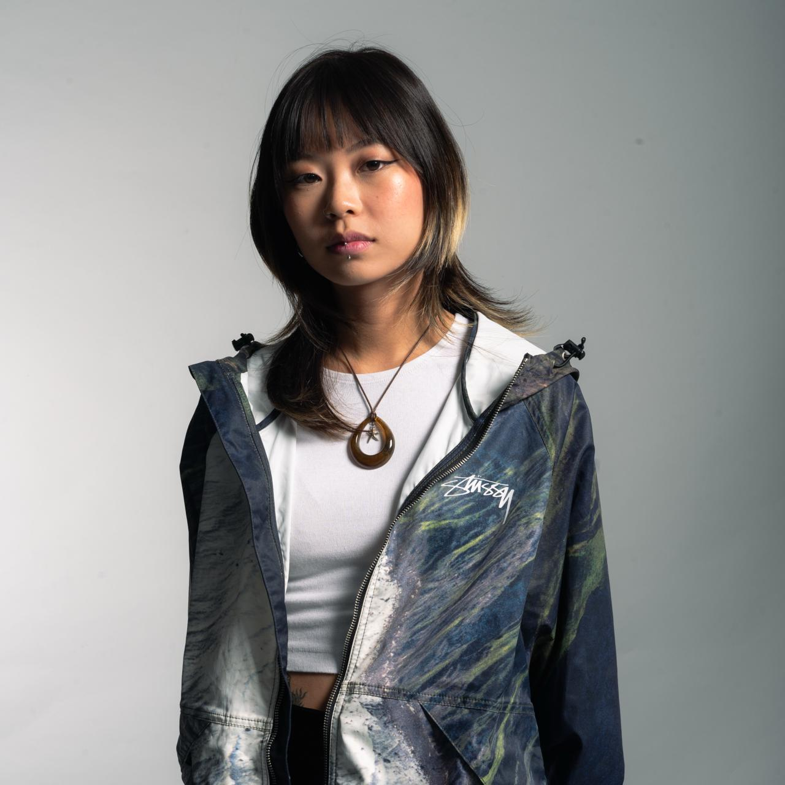
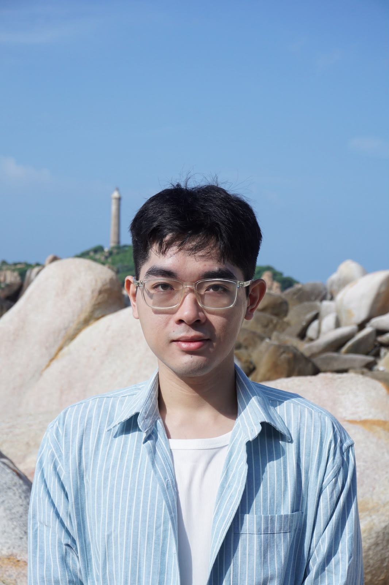
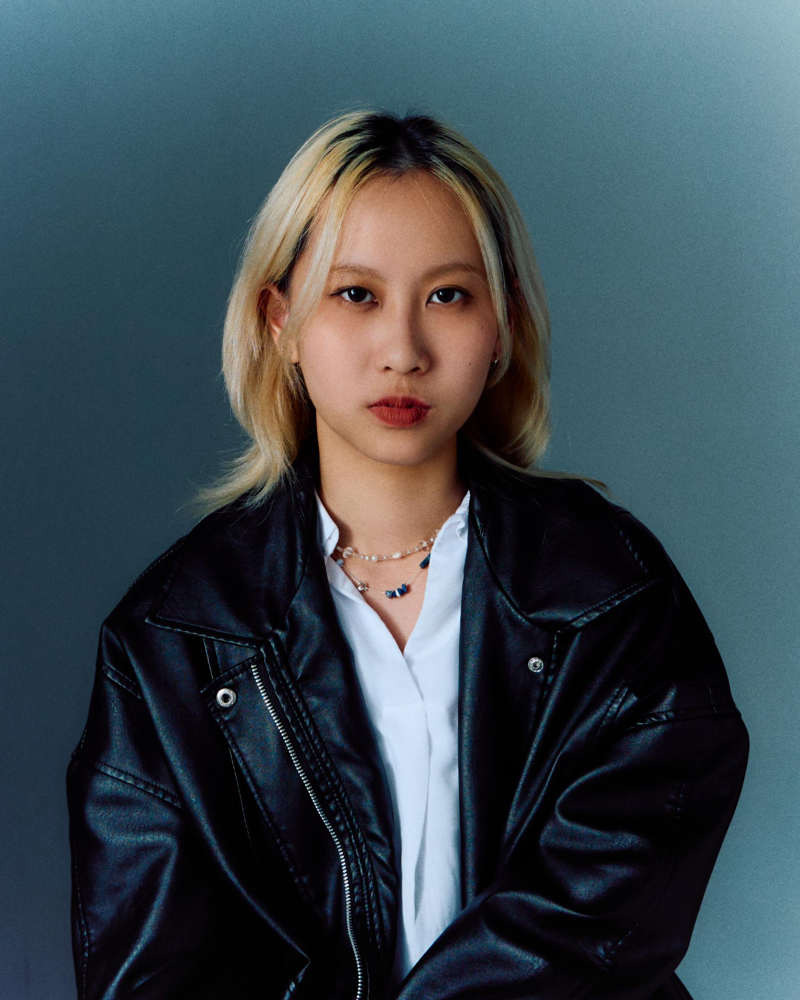
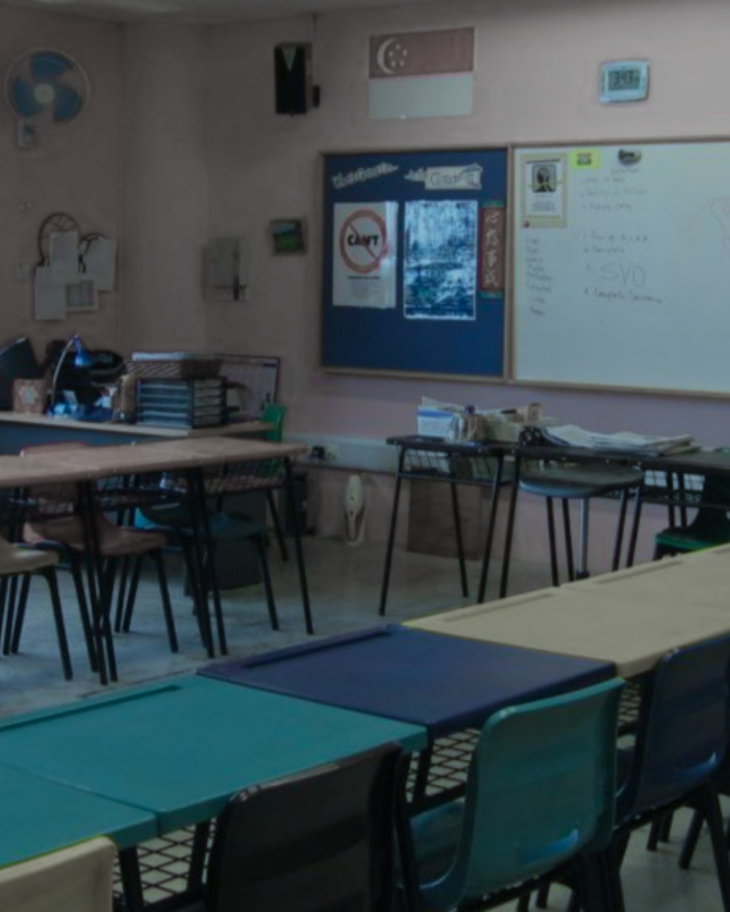
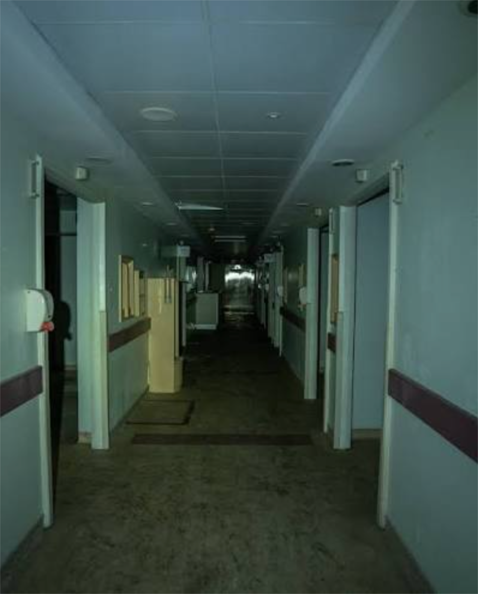

a psycho-spiritual reimagination of Descendants of the Eunuch Admiral (1995) by Kuo Pao Kun
Amidst this constant unease
a dream erupts from my body, hooved
and neighing.
The worker-horse fears the unknown yet dreams persistently of it. It yearns to leave this present insanity to go towards a gaping mystery which, unlike the certainty of the established path, cannot promise comfort, status, and wealth. It wants to leave but cannot tear itself away from the security and pleasure given in exchange for its compliance. Was it forced into obedience? Massaged and coaxed into it through a pleasurable pain? Or did it—does it—choose of its own volition?
The unconscious impulse erupts at a gallop. It overtakes our disciplined, obedient body. As eunuch and descendant traverse time in search of themselves, they discover how much they’ve forgotten. They discover the pain and horror they feel.
As the first full-length production by zone 境, Descendants is an “attempt to say something which can only be said in mythical form; an attempt to reach a horror which belongs to something so deep within the human psyche that it is outside of subjective experience.” (Robin Mackay)
Descendants was developed from late 2024, with a closed-door work-in-progress sharing in September 2025. The 2025 version was developed with a cast comprising Elle Cheng, Julius Foo, and Ranice Tay. The 2026 full-length show is developed with and performed by Chew Shaw En, Lai Yu Tong, and Neo Hai Bin.
Team
Director / Ang Kia YeeOriginal Text / Kuo Pao Kun
Playwright / Ang Kia Yee
Co-Producers / Pearlyn Tay, Ang Kia Yee
Research & Dramaturgy Assistant / Ning Poh
Dramaturgy Friend / Charlene Rajendran
Lighting & Set Designer / Ang Kia Yee
Stage Manager / Nicole Tandjung
Marketing Manager / Cheryl Ong
Graphic Designer / Dan
Photographer / Tay Yiling
Ticketing Manager / Pearlyn Tay
Performers / Chew Shaw En, Lai Yu Tong, Neo Hai Bin
Composer / Lai Yu Tong

Biographies
Ang Kia Yee

Kia Yee is a transdisciplinary poet, performance-maker, and slow dream machine who believes in our capacity for compassion, rupture, agency, and change. She is the Co-Founder & was the Company Lead (2020-2024) of Feelers, a research lab of artists and designers focused on the intersections of art and technology. From 2015-2017, she co-founded and co-led theatre collective make/space. She currently co-organizes Opening Acts, a performance initiative for fledgling writers and performers, with Elle Cheng. Her work has spanned poetry, essays, short stories, plays, performances, audio walks, workshops, video, counselling, and astrology readings.
Chew Shaw En

Chew Shaw En is an artist, performer and facilitator who works from the perspective of the body. She has a multidisciplinary practice that spans across different contexts. Her work often involves being part of highly collaborative and relational environments where co-creation and new ways of understanding emerges. She finds meaning in creating and being part of work that nurtures worlds and possibilities for people to relate to one another.
Lai Yu Tong

Lai Yu Tong is a visual artist who works across drawing, image-making, sculpture and sound. His practice works towards creating adequate media to articulate the present, believing in the intrinsic need for humans to make images and tell stories. He publishes music as Cosmologists and books under Thumb Books.
Neo Hai Bin

Neo Hai Bin is a performance maker. He began his theatre debut with Drama Box in 2009. He studied actor’s training practices with SCOT (Summer intensive 2014, Japan) and SITI Company (Summer Workshop 2019, NYC). Some of his physical theatre works are Being:息在 (M1 Fringe Festival 2022), Transit步, Transition移 (Esplanade eXchAnge 2023, 2024), OX (Kaleidoscope.V 2023), maomao (2025).
His literary practice involves research works in social issues and the human condition, culminating into poems, prose, critiques, and short stories. Some of his written plays include 招: When The Cold Wind Blows (Singapore Theatre Festival 2018); Cut Kafka! (Esplanade Huayi Festival Commission 2018); Merdeka / 獨立 /சுதந்திரம் (Wild Rice, with Alfian Sa’at, 2019); Tanah•Air 水•土: A Play In Two Parts (Devised with Drama Box, 2019); Being:息在 (M1 Fringe Festival 2022).
He is part of the theatre reviewers team “劇讀：thea.preter” since 2017. He also co-founded "微.Wei Collective" with lighting designer Liu Yong Huay, creating spatial experiences for participants since 2017.
Pearlyn Tay

Pearlyn Tay is an independent producer invested in enabling artistic developmental and creation processes across disciplines and genres. Dedicated to dismantling inherited ways of working, she seeks reconstruction towards intentional and meaningful collaborative spaces for artistic creation. She takes a special interest in the development of emergent practices for artists and producers alongside community- and network-building.
Cheryl Ong

Cheryl works fluidly across marketing and start-ups, with past experience at a social media agency and secondary art market, Art Again. She is drawn to the ecosystems and experimental spaces where creative communities gather. Since Zone’s first presentation of Descendants in 2025, she's gained a focus on initiatives built from the ground up, helping articulate artistic visions into clear, engaging narratives for the audiences they hope to reach. Cheryl approaches communications as both a strategic and collaborative practice.
Dan

Dan (Nguyen Cong Danh) is a designer working across visual communication and editorial design. His practice explores how typography and visual systems can shape the way stories, research, and collective memory are read. He is particularly interested in publication as a space for structuring conversations, translating archives, and connecting individual voices into shared narratives.
Nicole Tandjung
Nicole is a freelance stage manager and arts worker. Holding a Diploma in Arts Business Management and a degree in English Literature, Nicole is interested in storytelling and aspires to build and strengthen communities through her work in the arts. She has previously stage managed for A Mirage, The Theatre Practice's Advocacy shows, The Winter Players and Paper Monkey Theatre and has previously supported programmes for the Singapore Writer's Festival. She is delighted to be a part of Descendants.
Ning Poh
Ning is a documenter, movement artist, and a willing sounding board for any and all ideas.
Her practice is grounded in and excited by a sensitivity to the everyday, as well as human and non-human relationships with time and memory. As a dancer, Ning has a base in Hip Hop freestyle but remains curious to expand her movement vocabulary.
Having majored in Southeast Asian Studies at the National University of Singapore, she is particularly fascinated with the region's sociocultural landscapes and believes in the importance of documenting the minute and overlooked. She enjoys working collaboratively and being engaged in process-driven, multidisciplinary works.
Charlene Rajendran
Charlene Rajendran is a theatre educator, writer and dramaturg. She is interested in questions of difference, deep listening, play-based pedagogy and thought-leadership in urban multicultural contexts. Her work as dramaturg includes interdisciplinary and community arts projects such as Monstress (2026), AIR (2024), ItSelf TerJadi (2023), Kepaten Obor (2022), In the Silence of Your Heart (2018) and Both Sides, Now (2013-2018). Publications include Surat KeKawan (2025) and (Asian) Dramaturgs’ Network: Sensing, Complexity, Tracing and Doing (lead editor, 2023). She works as Associate Professor at the National Institute of Education – Nanyang Technological University, Singapore.
Tay Yiling

Yiling, aka. ariatays, is a photographer and visual artist who works across images, poetry, and performance. Her practice makes close-readings of the material everyday and all the ways we live, examining points of humanness, intimacy, and vulnerability. She has presented works with the likes of Objectifs, Singapore International Photography Festival, AFTERIMAGE Press, Lightbox Photo Library (TW), and Ephemere (JP).
Supported by


Rehearsal Venue Partner

With thanks to
The ObservatoryDanial Mirza


About zone 境
a cross-disciplinary performance group started in 2025 which gathers at the borders where language fails, to do the work of expressing the unspeakable and unnameable. By conjuring transient zones where alternative realities and ways of being are possible, we remind ourselves of the possibilities of the impossible. We make theatre that is preoccupied with the symbolic, psychic, and unconscious. Our creative process is intuition-led, and moves beyond the logics of siloed disciplines and traditional narrative structures. We are invested in performances that reverberate beyond intellect and cognition—conveying moods, atmospheres, hunches, suspicions, and desires.